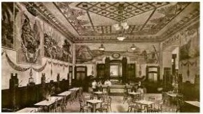

Necesitas un descanso, tienes ganas de un buen café, entra en nuestra cafetería. Desconecta y disfruta de los bocados preparados con igredientes selctos de nuestros profesionales
Grupo Las horas somo una empresa libre en el sector de la restauracion premium de las cafeterías y restauraciones situados en los enlaces más emblemáticos de las ciudades de Madrid, Valencia Barcelona y Sevilla. Nuestro locales ubicados siempre en los enclaves provilegiados, swe caractrizan por una arquitectura y decoración únicas, así como una ciudada presentación de su comida, siempre se máxima calidad. Somos música, arte y cultuera, pero sobre todo, somos un grupo de personas trabajando para hacer sentir experiencia únicas a nuestros clientes.
